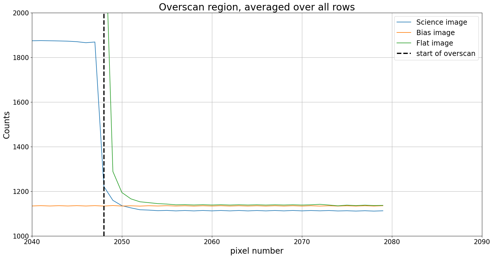
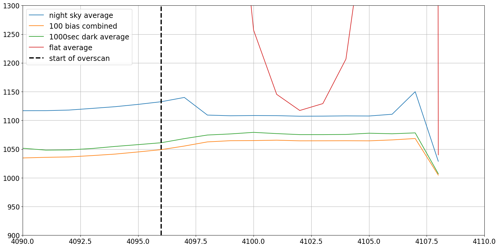

Overscan
Contents
1.6. Overscan#
Область overscan CCD, если она присутствует, представляет собой часть чипа, которая закрыта. В зависимости от камеры это может быть полезным способом удаления небольших вариаций в уровне bias от кадра к кадру.
Однако полезность overscan зависит от камеры. Рекомендуется изучить область overscan используемой камеры перед тем, как решить, следует ли включать ее в редукцию изображений.
Одно важное замечание: overscan всегда включает bias, read noise и dark current. Пиксели overscan по-прежнему являются пикселями, и так же, как любой другой пиксель, включают dark current и подвержены read noise. Многие источники описывают overscan как коррекцию bias, но если dark current для камеры пренебрежимо мал, как это часто бывает для криогенно охлаждаемых камер, то overscan по сути является bias.
Read noise в overscan уменьшается путем усреднения по области overscan. Это будет рассмотрено в более позднем ноутбуке; этот ноутбук сосредоточен на том, как выглядит overscan и как решить, использовать его или нет.
В этом ноутбуке мы рассмотрим область overscan для двух разных камер: криогенно охлаждаемой камеры, в которой overscan предоставляет полезную информацию, и термоэлектрически охлаждаемой камеры, в которой overscan не предоставляет полезной информации.
from pathlib import Path
from astropy.nddata import CCDData
from astropy.visualization import hist
from ccdproc import subtract_overscan
import matplotlib.pyplot as plt
from convenience_functions import show_image
# Use custom style for larger fonts and figures
plt.style.use('guide.mplstyle')
1.6.1. Случай 1: Криогенно охлаждаемая Large Format Camera (LFC) в Palomar#
Изображения ниже взяты с чипа 0 LFC на телескопе Palomar 200-дюймов. Техническая информация о камере здесь. Оказывается, что изображения на самом деле не 2048 × 4096; как видно ниже, изображения 2080 × 4128. “Дополнительная” часть в каждом направлении — это overscan.
Заголовок FITS для этих файлов включает ключевое слово BIASSEC, которое указывает номинальную область overscan. Его значение — [2049:2080,1:4127], что указывает, что overscan простирается с 2048 по 2079 (индексация Python начинается с 0, а не с 1, как в FITS) в “коротком” направлении и по всему чипу в другом направлении. Как мы увидим вскоре, полезная область overscan меньше этой.
Мы сосредоточимся здесь на overscan в стороне, которая номинально имеет ширину 2048; в Python это второй индекс. Показанные ниже сечения счета пикселей взяты из bias, научного и flat изображения. Flat изображения особенно полезны при оценке того, какая часть области overscan полезна, поскольку среднее значение пикселя в экспонированной части камеры обычно велико.
cryo_path = Path('example-cryo-LFC')
bias_lfc = CCDData.read(cryo_path / 'ccd.001.0.fits', unit='count')
science_g_lfc = CCDData.read(cryo_path / 'ccd.037.0.fits', unit='count')
flat_g_lfc = CCDData.read(cryo_path / 'ccd.014.0.fits', unit='count')
WARNING: FITSFixedWarning: 'datfix' made the change 'Set MJD-OBS to 57402.000000 from DATE-OBS'. [astropy.wcs.wcs]
WARNING: FITSFixedWarning: 'datfix' made the change 'Set MJD-OBS to 57403.000000 from DATE-OBS'. [astropy.wcs.wcs]
bias_lfc.shape
(4128, 2080)
plt.figure(figsize=(20,10))
plt.plot(science_g_lfc.data.mean(axis=0), label='Science image')
plt.plot(bias_lfc.data.mean(axis=0), label='Bias image')
plt.plot(flat_g_lfc.data.mean(axis=0), label='Flat image')
plt.grid()
plt.axvline(x=2048, color='black', linewidth=3, linestyle='dashed', label='start of overscan')
plt.legend()
plt.ylim(1000, 2000)
plt.xlim(2040, 2090)
plt.xlabel('pixel number')
plt.ylabel('Counts')
plt.title('Overscan region, averaged over all rows')
Text(0.5, 1.0, 'Overscan region, averaged over all rows')

1.6.1.1. Обсуждение примера 1#
Есть несколько интересных вещей здесь.
Значение отсчетов почти однородно в области overscan.
Это хорошо; в идеале overscan почти однороден, поскольку пиксели не освещены.
Некоторое количество света просачивается из области изображения в область overscan.
Это наиболее очевидно в flat изображении, где отсчеты намного выше значения, к которому они асимптотически приближаются, по крайней мере до номера пикселя 2055.
Хотя заголовок FITS указывает, что overscan начинается с пикселя 2048, полезная часть overscan (т.е. часть, не загрязненная светом) простирается с пикселя 2055 до конца.
Существует смещение между научным изображением и двумя другими изображениями, и, возможно, между flat и bias изображениями.
Такая вариация — это то, что overscan предназначен исправлять. Может быть так, что это одно научное изображение имеет другое значение overscan (оно было сделано несколько часов спустя после flat изображения), или может быть так, что все научные изображения имеют другое значение overscan, чем другие типы изображений.
В любом случае вычитание overscan из каждого изображения позволяет корректировать эти смещения.
Dark current в этой камере по существу равен нулю, поэтому overscan измеряет bias.
Для ясности, это не очевидно из графика выше, но криогенно охлаждаемые камеры имеют пренебрежимо малый dark current.
1.6.1.1.1. Что происходит, если не использовать overscan?#
Ничего особенно плохого. В конкретном случае выше игнорирование overscan сдвинет уровень фона в научном изображении примерно на 20 отсчетов, поскольку разница между областью overscan научного изображения ниже, чем overscan в других изображениях, примерно на 20 отсчетов. Если перед выполнением науки фон этих изображений вычитается, то это смещение должно быть удалено вместе с фоном.
1.6.1.2. Вывод для случая 1#
Overscan полезен, но используемая область overscan простирается с 2055 до конца чипа, а не с 2048 до конца чипа, как утверждает заголовок FITS. Другими словами, подходящий BIASSEC для этих изображений — [2056:2080,1:4127]. (Обратите внимание, что FITS начинает нумерацию с 1 вместо 0, поэтому 2055 в Python — это 2056 в обозначении FITS.)
Если наука, которую вы используете, требует знания отсчетов с точностью до одного или двух отсчетов, и моделирование фона в научном изображении не является опцией, рассмотрите возможность использования overscan.
1.6.2. Случай 2: Термоэлектрически охлаждаемая Apogee Aspen CG16M#
Это низкоуровневый исследовательский CCD, продаваемый Andor. Основная информация здесь, хотя вам нужно отследить описание сенсорного чипа, KAF-16803 CCD, чтобы узнать, что область overscan этой камеры 4096 × 4096 пикселей простирается с пикселя 4097 по 4109 вдоль одного из направлений.
therma_path = Path('example-thermo-electric')
kelt = CCDData.read(therma_path / 'kelt-16-b-S001-R001-C084-r.fit', unit='adu')
dark1000 = CCDData.read('dark-test-0002d1000.fit.bz2', unit='adu')
flat = CCDData.read(therma_path / 'AutoFlat-PANoRot-r-Bin1-006.fit', unit='adu')
master = CCDData.read('combined_bias_100_images.fit.bz2', unit='adu')
INFO: using the unit adu passed to the FITS reader instead of the unit adu in the FITS file. [astropy.nddata.ccddata]
WARNING: FITSFixedWarning: RADECSYS= 'FK5 ' / Equatorial coordinate system
the RADECSYS keyword is deprecated, use RADESYSa. [astropy.wcs.wcs]
WARNING: FITSFixedWarning: 'datfix' made the change 'Set MJD-OBS to 58269.980359 from DATE-OBS'. [astropy.wcs.wcs]
INFO: using the unit adu passed to the FITS reader instead of the unit adu in the FITS file. [astropy.nddata.ccddata]
INFO: using the unit adu passed to the FITS reader instead of the unit adu in the FITS file. [astropy.nddata.ccddata]
WARNING: FITSFixedWarning: 'datfix' made the change 'Set MJD-OBS to 58269.954861 from DATE-OBS'. [astropy.wcs.wcs]
plt.figure(figsize=(20,10))
plt.plot(kelt.data.mean(axis=0), label='night sky average')
plt.plot(master.data.mean(axis=0), label='100 bias combined')
plt.plot(dark1000.data.mean(axis=0), label='1000sec dark average')
plt.plot(flat.data.mean(axis=0), label='flat average')
plt.grid()
plt.axvline(x=4096, color='black', linewidth=3, linestyle='dashed', label='start of overscan')
plt.legend()
plt.xlim(4090, 4110)
plt.ylim(900, 1300)
(900.0, 1300.0)

1.6.2.1. Обсуждение примера 2#
Камера также имеет некоторые интересные особенности.
Значения отсчетов значительно изменяются в области overscan
Это наиболее очевидно в overscan для flat. Не только свет просачивается в overscan, но overscan, по-видимому, в основном является утечкой света. Возможно, полезен только один пиксель в лучшем случае.
Overscan включает dark current
Overscan для dark изображения на рисунке выше примерно на 10 отсчетов выше, чем отсчеты для bias. Dark current для этой камеры составляет примерно 0.01 отсчет/пиксель/секунда. Для dark экспозиции в 1000 секунд ожидаемые dark отсчеты составляют около 10, что является разницей, видимой на графике.
Существует смещение между bias/dark и научными/flat изображениями
Смещение в этой камере составляет примерно 50 отсчетов. Оно достаточно велико, чтобы не следовало использовать overscan для этой камеры.
Отсчеты overscan выше, чем средние отсчеты bias
Обратите внимание, что для bias изображения отсчеты увеличиваются до пикселя, где начинается overscan, а затем выравниваются. Оказывается, что отсчеты overscan выше, чем среднее значение отсчетов bias, поэтому вычитание overscan приведет к bias изображению, которое будет отрицательным. Это еще одна причина быть подозрительным к области overscan в этой камере.
1.6.2.2. Вывод для случая 2#
Не используйте overscan в этом случае. Существуют серьезные проблемы с утечкой света и большими различиями в отсчетах overscan между bias и научными изображениями.